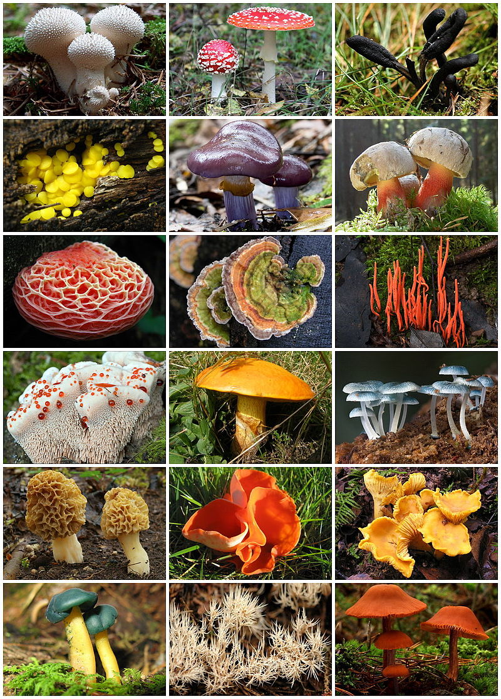

ГЛАВНАЯ ИНФОРМАЦИЯ
Грибы - царство живой природы, объединяющее эукариотические организмы, сочетающие в себе некоторые признаки как растений, Понятие о грибах как об отдельном царстве сформировалось в науке к 1970-м годам, хотя выделить это царство предлагал ещё Э. Роль грибов в природе и в хозяйстве человека трудно переоценить. Грибы присутствуют во всех экологических нишах - в воде и на
так и животных. Грибы изучает наука микология, которая считается разделом ботаники, поскольку ранее грибы относили к царству
растений.
Фрис в 1831 году, а Карл Линней высказывал сомнения, размещая грибы в царстве растений в своей «Системе природы». Во второй
половине XX века окончательно сформировалось и представление о полифилетизме грибов. К концу XX века были накоплены
данные по генетике, цитологии и биохимии, позволившие разделить эту группу организмов на несколько не родственных между собой
ветвей и распределить их между различными царствами, оставив в царстве «настоящих», или собственно грибов, только одну из них.
Таким образом, к началу XXI века научный термин «грибы» стал неоднозначным.
суше, в почве и на всевозможных иных субстратах. Являясь редуцентами, они играют важную роль в экологии всей биосферы,
разлагая всевозможные органические материалы и способствуя образованию плодородных почв. Велика роль грибов как участников
взаимовыгодных симбиотических (мутуалистических) сообществ. Известны симбиотические отношения грибов с высшими растениями
- микориза, с водорослями и цианобактериями - лишайники, с насекомыми, представители порядка неокаллимастиговых
- обязательный компонент пищеварительной системы жвачных и некоторых других травоядных млекопитающих, они играют важную роль
в переваривании растительной пищи.
